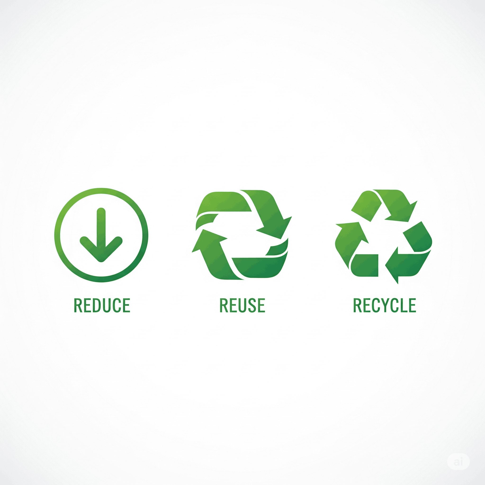
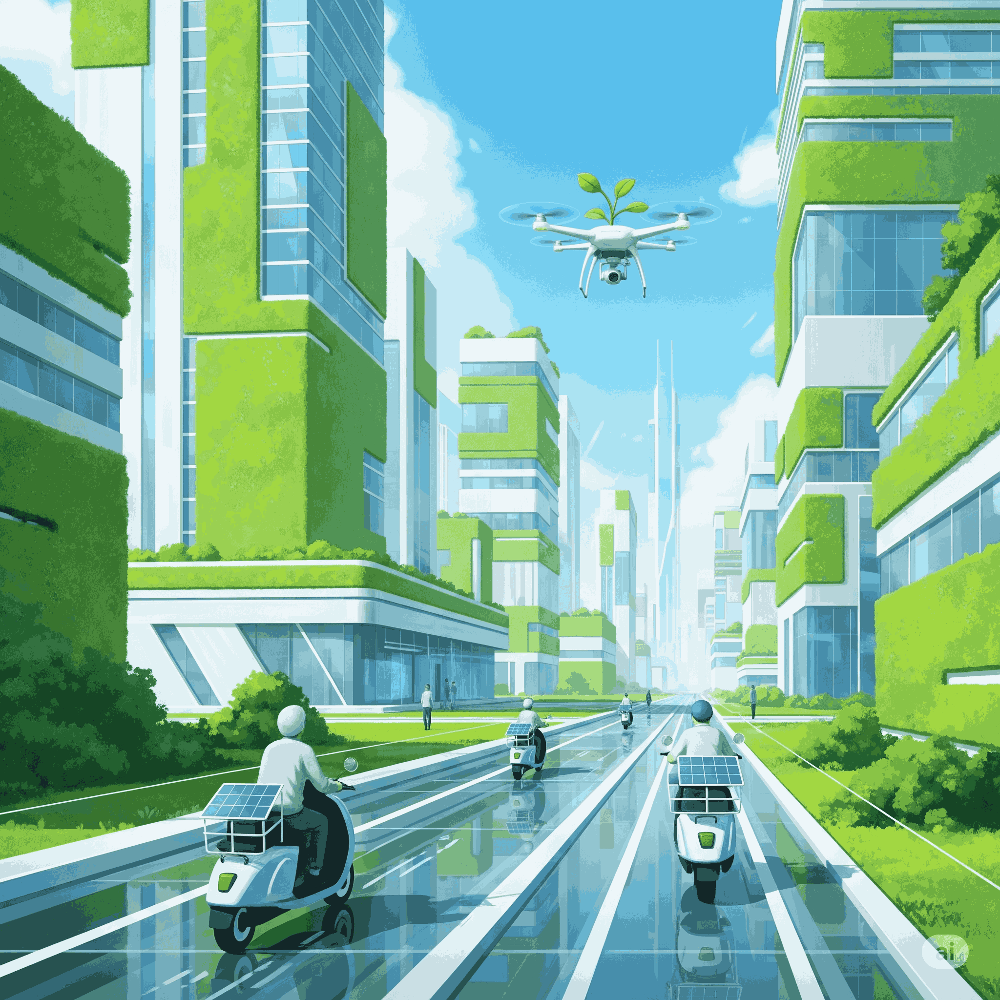

Situation Déclenchante
Léa vient de recevoir pour son anniversaire le dernier smartphone à la mode. Son ami Tom, lui, s'est offert un drône avec ses économies. En discutant, ils réalisent que leurs objets high-tech, tout comme la trottinette électrique de leur voisine, sont partout. Mais une question les taraude : fabriquer un smartphone coûte cher, c'est sûr, mais combien coûte-t-il réellement à la planète ? Et comment le fabricant a-t-il décidé de son prix de vente ? Ils découvrent qu'un ingénieur aujourd'hui ne choisit pas les matériaux juste pour leur solidité. Il doit penser au coût, à la facilité de recyclage et même aux conditions de travail de ceux qui extraient les minerais. C'est comme une enquête complexe où chaque choix a des conséquences. Prêt à devenir un ingénieur-détective et à analyser le cycle de vie complet d'un produit, de l'idée au recyclage ?
Ta mission, si tu l'acceptes...
À la fin de cette séquence, tu seras capable de penser comme un véritable ingénieur du 21e siècle.
Compétences à maîtriser :
- Analyser le cycle de vie d'un produit (ACV) en identifiant les impacts à chaque étape.
- Intégrer des contraintes de coût et de développement durable dans le choix d'une solution technique.
- Proposer des pistes d'amélioration pour réduire l'empreinte environnementale d'un objet (réparabilité, choix des matériaux).
Savoirs et connaissances à acquérir :
- Éco-conception, Analyse du Cycle de Vie (ACV), Empreinte carbone.
- Économie circulaire (Réduire, Réutiliser, Recycler).
- Obsolescence programmée vs perçue.
- Modèle économique (coûts de production, marge, prix de vente).
- Indice de réparabilité.
Introduction et Problématique
Comme Léa et Tom, nous sommes entourés d'objets technologiques de plus en plus performants. Mais cette course à l'innovation a un coût caché. L'extraction des matières premières épuise les ressources, la fabrication consomme de l'énergie et la fin de vie de nos appareils génère des montagnes de déchets électroniques. Face à ces défis planétaires, les ingénieurs ne peuvent plus se contenter de créer des produits qui fonctionnent bien ; ils doivent concevoir des produits qui fonctionnent bien ET qui respectent l'environnement et la société.
Problématique : Comment un ingénieur peut-il concilier les exigences de performance technique, de rentabilité économique et de responsabilité environnementale lors de la conception d'un produit grand public comme un smartphone, un drône ou une trottinette électrique ?
Pour répondre à cette question, nous allons explorer les outils et les concepts de l'éco-conception, analyser le cycle de vie de nos objets fétiches et décrypter leur modèle économique.
Exploration en Profondeur
1. L'Éco-conception
a) 🎓 Définition Académique et Enjeux
L'éco-conception est une démarche préventive et innovante qui vise à intégrer la protection de l'environnement dès la phase de conception d'un produit ou d'un service. Son objectif est de réduire les impacts environnementaux négatifs tout au long du cycle de vie du produit, tout en conservant sa qualité d'usage. L'enjeu est de passer d'une logique curative (traiter la pollution) à une logique préventive (éviter de polluer).
b) 🧠 Analogie et Simplification Pédagogique
C'est comme préparer un sac à dos pour une longue randonnée. Un randonneur classique prendrait tout ce qui lui semble utile, et se rendrait compte en chemin que son sac est trop lourd. Un "éco-randonneur" réfléchirait avant de partir : "De quoi ai-je VRAIMENT besoin ? Puis-je trouver un objet qui a plusieurs fonctions ? Comment puis-je minimiser mes déchets ?". L'éco-conception, c'est penser à la fin du voyage avant même d'avoir fait le premier pas.
c) 📱 Étude de Cas Concrète
La trottinette électrique : Un fabricant pourrait choisir un cadre en aluminium recyclé plutôt qu'en aluminium "vierge". Il pourrait aussi concevoir la batterie pour qu'elle soit facilement amovible et remplaçable par l'utilisateur, au lieu de la coller dans le châssis, ce qui rend la réparation quasi impossible.
d) 🛠️ Décortiquage Technique - "Sous le Capot"
Pour éco-concevoir une partie d'un drône (par exemple, ses hélices) :
- Analyse : Les hélices actuelles sont en plastique ABS, un dérivé du pétrole. Elles cassent souvent.
- Recherche d'alternatives : On pourrait utiliser un plastique biosourcé (à base d'amidon de maïs) ou un plastique recyclé. On pourrait aussi renforcer leur design pour qu'elles résistent mieux aux chocs.
- Évaluation : Le plastique biosourcé est-il aussi performant ? Est-il plus cher ? Le design renforcé n'alourdit-il pas trop le drône, réduisant l'autonomie de la batterie ?
- Choix et prototypage : On choisit la meilleure solution (compromis performance/impact) et on fabrique des prototypes pour les tester.
e) 🤔 Points de Vigilance et Erreurs à Éviter
1. Le "Greenwashing" : C'est quand une entreprise communique beaucoup sur une petite action écologique pour se donner une bonne image, alors que le reste de sa production est très polluant. (Ex: "Notre smartphone a une boîte en carton recyclé", mais le téléphone lui-même est irréparable).
2. Oublier un aspect : Se concentrer uniquement sur le recyclage et oublier l'énergie consommée lors de la fabrication ou de l'utilisation.
3. Le transfert de pollution : Choisir un matériau qui pollue moins l'air, mais qui nécessite une énorme quantité d'eau pour être produit.
f) 💡 Le Saviez-Vous ? / Anecdote Technologique
g) 🤝 Ponts Interdisciplinaires
SVT : Comprendre les écosystèmes pour mesurer l'impact de l'extraction des minerais. Physique-Chimie : Connaître les propriétés des matériaux (conductivité, résistance, masse volumique) pour choisir les bonnes alternatives. Géographie : Savoir d'où viennent les matières premières et les enjeux géopolitiques associés (ex: le cobalt pour les batteries de smartphones en RDC).
h) 🚀 Pour les Experts (Approfondissement)
2. L'Analyse du Cycle de Vie (ACV)
a) 🎓 Définition Académique et Enjeux
L'Analyse du Cycle de Vie (ACV) est un outil d'évaluation méthodique et normalisé (normes ISO 14040) qui permet de quantifier les impacts environnementaux d'un produit, d'un service ou d'un procédé. L'analyse couvre toutes les étapes de sa vie, de l'extraction des matières premières ("berceau") jusqu'à son traitement en fin de vie ("tombe").
b) 🧠 Analogie et Simplification Pédagogique
L'ACV, c'est la "biographie complète et non censurée" d'un objet. Ce n'est pas juste sa date de naissance (fabrication) et sa date de mort (poubelle). C'est aussi son enfance (extraction des matériaux), son adolescence (transport), sa vie d'adulte (utilisation et consommation d'énergie) et ce qu'il devient après (recyclage, décomposition...). L'ACV raconte toute l'histoire pour avoir une vue d'ensemble.
c) 📱 Étude de Cas Concrète
Le smartphone : L'ACV d'un smartphone révèle que ce n'est pas sa fin de vie qui est la plus impactante, mais sa fabrication ! L'extraction des "terres rares" et des métaux précieux (or, tantale, cobalt) est extrêmement polluante et énergivore. La phase d'utilisation (recharge électrique) a un impact, mais il est souvent moindre comparé à la fabrication.
3. Concepts Clés à la Loupe
Empreinte Carbone
L'empreinte carbone est un indicateur qui mesure la quantité de gaz à effet de serre (GES) émise par une activité, une personne ou un produit. Elle est généralement exprimée en "kilogrammes d'équivalent dioxyde de carbone" (kg CO2eq). C'est l'un des indicateurs les plus connus de l'ACV, car il est directement lié au réchauffement climatique. Un smartphone génère en moyenne 0 kg CO2eq sur son cycle de vie.
Cartes Interactives : Concepts Opposés
Obsolescence Programmée
Le produit est conçu pour tomber en panne.
Définition: Techniques du fabricant pour réduire délibérément la durée de vie d'un produit (ex: pièce d'usure fragile et irremplaçable). C'est illégal en France.
Obsolescence Perçue
Le produit est perçu comme démodé.
Définition: Le produit fonctionne encore mais le marketing et les nouvelles modes poussent à le remplacer (ex: changer de téléphone pour une nouvelle couleur).
4. Modèles Économiques
Le Modèle Économique
C'est la "recette" qui explique comment une entreprise gagne de l'argent. Elle décrit comment l'entreprise crée de la valeur (le produit), la livre (distribution) et en capture une partie (le prix de vente).
Prix de Vente = Coûts de Production + Coûts de R&D/Marketing + Marge de l'entreprise.
L'Économie Circulaire
C'est un modèle économique visant à découpler la croissance de l'épuisement des ressources en passant d'un schéma linéaire "extraire-fabriquer-jeter" à un modèle en boucle où les produits sont réutilisés, réparés, et où les déchets deviennent des ressources.
Exemple - Trottinette électrique en libre-service : C'est un exemple d'économie de la fonctionnalité. On ne vend plus la trottinette (le produit) mais son usage (le service de déplacement). L'entreprise a tout intérêt à ce que ses trottinettes soient robustes, faciles à réparer et durent le plus longtemps possible pour être rentables.
5. L'Indice de Réparabilité
Obligatoire en France sur certains produits électroniques (dont les smartphones), c'est une note sur 10 qui informe le consommateur sur la facilité de réparation d'un produit. Un bon score est par exemple 0.0/10.
Elle est calculée sur 5 critères : la disponibilité de la documentation technique, la facilité de démontage, la disponibilité des pièces détachées, leur prix, et un critère spécifique à la catégorie du produit.
Avenir et Perspectives
Demain, l'ingénieur ne sera plus seulement un technicien, mais un véritable "chef d'orchestre" du durable. Les innovations ne porteront plus seulement sur la puissance ou la vitesse, mais sur la modularité (pouvoir changer un seul composant, comme le projet "Fairphone"), l'utilisation de nouveaux matériaux biosourcés ou "auto-réparants", et l'intelligence artificielle pour optimiser la consommation d'énergie. Les métiers de "réparateur high-tech", de "designer en économie circulaire" ou d'"analyste ACV" vont devenir cruciaux. Le défi éthique sera de créer des technologies qui servent l'humain et la planète, et non une simple logique de consommation sans fin.
Conclusion
Nous avons vu que derrière le prix affiché d'un smartphone, d'un drône ou d'une trottinette se cache une réalité complexe. Pour concilier performance, rentabilité et responsabilité, l'ingénieur dispose aujourd'hui d'une boîte à outils puissante : l'éco-conception pour penser "durable" dès le départ, l'ACV pour mesurer l'impact réel de ses choix, et les principes de l'économie circulaire pour inventer de nouveaux modèles. L'indice de réparabilité et la lutte contre l'obsolescence montrent que le consommateur a aussi un rôle à jouer. Le "vrai coût" d'un produit n'est donc pas seulement financier, il est aussi environnemental et social. Le défi de l'ingénieur moderne est de maîtriser ces trois dimensions pour créer les objets de demain.
Testez vos connaissances !
Exercice 1 : QCM
Quelle démarche vise à intégrer l'environnement dès la conception d'un produit ?
Exercice 2 : Vrai ou Faux
L'obsolescence programmée est encouragée en France pour stimuler l'économie.
Exercice 3 : Texte à trous
L'indice de est une note sur 10 qui informe sur la facilité de réparation d'un produit.
Exercice 4 : QCM
Quel est le principal objectif de l'économie circulaire ?
Exercice 5 : Vrai ou Faux
L'ACV analyse uniquement l'impact d'un produit lors de son recyclage.
Exercice 6 : Texte à trous multiple
Le est une pratique de communication trompeuse, alors que l' est une démarche vertueuse.
Exercice 7 : Choix multiples
Quels sont les piliers de l'économie circulaire (les "3R") ? (Plusieurs réponses possibles)
Synthèse Visuelle (Carte Mentale)
- Éco-conception & Modèle Économique
- Principes Clés
- Éco-conception : Penser environnement dès le début.
- ACV : Analyser l'impact de A à Z (berceau -> tombe).
- Économie Circulaire : Réduire, Réutiliser, Recycler.
- Outils & Indicateurs
- Empreinte Carbone : Mesure des GES (kg CO2eq).
- Indice de Réparabilité : Note sur 10 pour la facilité de réparation.
- Principes Clés
Lexique / Glossaire
- ACV (Analyse du Cycle de Vie)
- Outil pour évaluer les impacts environnementaux d'un produit sur toute sa durée de vie.
- BMS (Battery Management System)
- Système électronique qui contrôle et protège une batterie rechargeable pour optimiser sa performance et sa durée de vie.
- Éco-conception
- Démarche qui intègre des critères environnementaux dès la conception d'un produit.
- Économie circulaire
- Modèle économique qui vise à limiter le gaspillage en créant une boucle où les déchets des uns sont les ressources des autres.
- Économie de la fonctionnalité
- Modèle économique centré sur la vente de l'usage d'un produit plutôt que sur la vente du produit lui-même (ex: location de trottinettes).
- Empreinte carbone
- Mesure de la quantité de gaz à effet de serre émise. Exprimée en kg CO2 équivalent.
- Greenwashing
- Pratique marketing consistant à communiquer de manière trompeuse sur les qualités écologiques d'un produit ou d'une entreprise. Se traduit par "éco-blanchiment".
- Indice de réparabilité
- Note sur 10 indiquant si un produit est facilement réparable.
- Obsolescence programmée
- Techniques d'un fabricant pour limiter volontairement la durée de vie d'un produit.
- Terres rares
- Groupe de métaux aux propriétés particulières, essentiels dans de nombreuses technologies (écrans, aimants) mais dont l'extraction est souvent polluante.
Pour Aller Plus Loin
- Mini-projet à réaliser : Calcule ton "indice de réparabilité maison" pour un objet simple chez toi (ex: une souris d'ordinateur). Peux-tu l'ouvrir facilement ? Les pièces sont-elles standards ? Trouves-tu des pièces de rechange sur internet ? Donne-lui une note sur 10 et justifie.
- Vidéo de référence à regarder : Recherche "L'histoire des choses" (The Story of Stuff) sur internet. C'est une vidéo d'animation qui explique très bien le modèle "extraire-fabriquer-jeter".
- Métier à découvrir : Ingénieur en éco-conception. Ce spécialiste travaille avec les équipes de design et de marketing pour trouver des solutions techniques qui réduisent l'impact environnemental des produits, tout en restant économiquement viables.